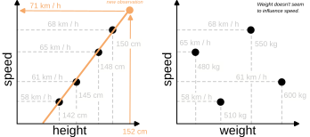
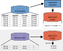
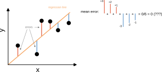
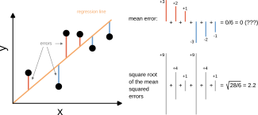
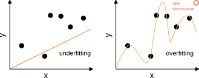

- Up to now, we have only seen how to predict classes using supervised learning.
- However, we can also predict (continuous) numbers.
- We still use the supervised learning approach (with example data for training the model), but instead of classification, we perform regression.
Regression
- A number of observations with attributes and their values (x1, ..., xd).
- For each observation, a continuos target value y ∈ R
→ here: speed.
Goal: Find the correct target value for a new observation.
→ Regression
Example
Observations of horses
Speed = 68 km/h -- Speed = 58 km/h
Speed = 61 km/h -- Speed = 65 km/h
Observation: Horse weighing 520 kg and
148 cm tall.
→ predicted speed: 66 km/h
Find a line that passes through all points.

Training Phase
Application Phase

Since we are not predicting discrete classes, we cannot use error types like false positive or false negative. → we need different error measures.
Since we are not predicting discrete classes, we cannot use error types like false positive or false negative. → we need different error measures.
Since we are not predicting discrete classes, we cannot use error types like false positive or false negative. → we need different error measures.
Since we are not predicting discrete classes, we cannot use error types like false positive or false negative. → we need different error measures.
Since we are not predicting discrete classes, we cannot use error types like false positive or false negative. → we need different error measures.
Since we are not predicting discrete classes, we cannot use error types like false positive or false negative. → we need different error measures.
Since we are not predicting discrete classes, we cannot use error types like false positive or false negative. → we need different error measures.
The square root of the mean squared error is also called "root mean squared error" (RMSE).


Bias (underfitting) and Variance (overfitting) are very intuitive to understand for regressions.

- Supervised learning can be used for both classification (predicting classes) and regression (predicting numbers).
- Regression follows the same training-prediction logic as classification.
- As a measure for the performance of a regression, we use the root of the mean squared error.